lorenz_partial_additive_mse_uniform_p30_obsnoise005__ndelays_initsteps_autodimProject: Lorenz_INDpartial_NDInitSweep_autodim_D1_NormTrue__JacobianODE
Launched: 2026-04-20T19:55:41Z
Completed: 2026-04-21T04:00:30Z
Outcome: complete_clean
Git: latent-JacobianODE @ 6f807fc
Expected runs: 40
lorenz_partial_additive_mse_uniform_p30_obsnoise005__ndelays_initsteps_autodimDescription
Lorenz partial additive coupling, uniform reconstruction loss, obs_noise=0.05, prediction_steps=30, loop_closure_weight=0. Sweeps delay_embedding_params.n_delays over [5, 10, 15, ..., 100] (step 5, 20 values) × jacobianODEint_kwargs.traj_init_steps over [15, 30] = 40 runs. n_target_dims is picked at data-load time as the smallest k such that the first k PCs of the noisy training delay embeddings explain ≥ model.n_target_var_threshold of the total variance. final_perm_identity=true on the encoder guarantees that at init z[..., :n_target_dims] == x[..., :n_target_dims] — independent of permutation_seed.
Hypothesis
At obs_noise=0.05, small n_delays are noise-dominated in neighbor scatter (per the amplification diagnostic), so PCA-auto should pick a small n_target_dims there. As n_delays grows, more PCs clear the threshold, and the encoder has enough input dims to unfold the attractor. With traj_init_steps=30 (vs 15), the encoder sees twice as much history at init, which should help more at the high-noise setting than the low-noise one.
Success criteria
Swept axes (9): data.train_test_params.delay_embedding_params.n_delays, data.train_test_params.seq_length, model.encoder.n_input, model.n_target_dims, model.n_target_dims_pca_auto, model.n_target_dims_pca_cum_var, model.params.input_dim, model.params.output_dim, training.lightning.jacobianODEint_kwargs.traj_init_steps
Chosen run (by best_traj_loss): 0mjak7ms — traj_loss=0.00523, MASE=0.7825, R²=0.9856, LC loss=3.946, epoch=152.0
Swept-axis values at chosen run: data.train_test_params.delay_embedding_params.n_delays=45 · data.train_test_params.seq_length=45 · model.encoder.n_input=45 · model.n_target_dims=7 · model.n_target_dims_pca_auto=7 · model.n_target_dims_pca_cum_var=0.990085 · model.params.input_dim=7 · model.params.output_dim=49 · training.lightning.jacobianODEint_kwargs.traj_init_steps=15
Runs analyzed: 40 (expected 40)
| run_idx | run_id | data.train_test_params.delay_embedding_params.n_delays |
data.train_test_params.seq_length |
model.encoder.n_input |
model.n_target_dims |
model.n_target_dims_pca_auto |
model.n_target_dims_pca_cum_var |
model.params.input_dim |
model.params.output_dim |
training.lightning.jacobianODEint_kwargs.traj_init_steps |
best_traj_loss | best_MASE | R² | LC loss | epoch |
|---|---|---|---|---|---|---|---|---|---|---|---|---|---|---|---|
| 16 | 0mjak7ms |
45 | 45 | 45 | 7 | 7 | 0.990085 | 7 | 49 | 15 | 0.00523 | 0.7825 | 0.9856 | 3.946 | 152.0 |
| 15 | 5v9i6q23 |
40 | 60 | 40 | 7 | 7 | 0.990472 | 7 | 49 | 30 | 0.00552 | 0.8038 | 0.9853 | 4.001 | 126.0 |
| 27 | k8rmk1zv |
70 | 60 | 70 | 11 | 11 | 0.990007 | 11 | 121 | 30 | 0.00580 | 0.8063 | 0.9848 | 18.023 | 60.0 |
| 30 | eav4ihmf |
80 | 45 | 80 | 13 | 13 | 0.990058 | 13 | 169 | 15 | 0.00585 | 0.8062 | 0.9844 | 5.650 | 158.0 |
| 32 | yb09b19p |
85 | 45 | 85 | 14 | 14 | 0.990074 | 14 | 196 | 15 | 0.00591 | 0.8218 | 0.9845 | 57.041 | 103.0 |
| 21 | eg3lkacf |
55 | 60 | 55 | 9 | 9 | 0.990192 | 9 | 81 | 30 | 0.00602 | 0.8008 | 0.9841 | 8.097 | 137.0 |
| 19 | wzugs4fw |
50 | 60 | 50 | 8 | 8 | 0.990154 | 8 | 64 | 30 | 0.00610 | 0.8055 | 0.9838 | 8.165 | 115.0 |
| 29 | ig9dt81j |
75 | 60 | 75 | 12 | 12 | 0.990036 | 12 | 144 | 30 | 0.00612 | 0.8111 | 0.9837 | 26.472 | 157.0 |
| 17 | xuaha797 |
45 | 60 | 45 | 7 | 7 | 0.990085 | 7 | 49 | 30 | 0.00621 | 0.8295 | 0.9833 | 9.171 | 90.0 |
| 11 | d2lge3mo |
30 | 60 | 30 | 5 | 5 | 0.990271 | 5 | 25 | 30 | 0.00623 | 0.8251 | 0.9827 | 2.812 | 104.0 |
| 39 | wetuozcn |
100 | 60 | 100 | 17 | 17 | 0.990106 | 17 | 289 | 30 | 0.00632 | 0.7980 | 0.9833 | 8.438 | 142.0 |
| 13 | dker8liz |
35 | 60 | 35 | 6 | 6 | 0.990408 | 6 | 36 | 30 | 0.00640 | 0.8299 | 0.9828 | 0.447 | 171.0 |
| 10 | pkvfywg7 |
30 | 45 | 30 | 5 | 5 | 0.990271 | 5 | 25 | 15 | 0.00659 | 0.8250 | 0.9825 | 7.643 | 99.0 |
| 14 | 83orklvd |
40 | 45 | 40 | 7 | 7 | 0.990472 | 7 | 49 | 15 | 0.00666 | 0.8325 | 0.9822 | 3.836 | 84.0 |
| 24 | 0a09lst3 |
65 | 45 | 65 | 11 | 11 | 0.990219 | 11 | 121 | 15 | 0.00680 | 0.8276 | 0.9819 | 8.941 | 112.0 |
| 28 | 4txbacgu |
75 | 45 | 75 | 12 | 12 | 0.990036 | 12 | 144 | 15 | 0.00683 | 0.8520 | 0.9815 | 24.404 | 99.0 |
| 25 | a1zj5wu5 |
65 | 60 | 65 | 11 | 11 | 0.990219 | 11 | 121 | 30 | 0.00684 | 0.8386 | 0.9817 | 7.341 | 80.0 |
| 33 | wr926lfr |
85 | 60 | 85 | 14 | 14 | 0.990074 | 14 | 196 | 30 | 0.00692 | 0.8524 | 0.9813 | 41.526 | 60.0 |
| 20 | u4w79mcv |
55 | 45 | 55 | 9 | 9 | 0.990192 | 9 | 81 | 15 | 0.00706 | 0.8511 | 0.9812 | 4.979 | 68.0 |
| 18 | p39d9tv2 |
50 | 45 | 50 | 8 | 8 | 0.990154 | 8 | 64 | 15 | 0.00718 | 0.8309 | 0.9805 | 8.439 | 93.0 |
| 9 | jrl0ag78 |
25 | 60 | 25 | 5 | 5 | 0.990796 | 5 | 25 | 30 | 0.00723 | 0.8428 | 0.9806 | 0.158 | 144.0 |
| 34 | xxxpg7ig |
90 | 45 | 90 | 15 | 15 | 0.990087 | 15 | 225 | 15 | 0.00740 | 0.8709 | 0.9803 | 74.194 | 99.0 |
| 38 | 2u7zk7zi |
100 | 45 | 100 | 17 | 17 | 0.990106 | 17 | 289 | 15 | 0.00746 | 0.8694 | 0.9801 | 49.833 | 110.0 |
| 7 | nk3skmmt |
20 | 60 | 20 | 4 | 4 | 0.990715 | 4 | 16 | 30 | 0.00797 | 0.8833 | 0.9790 | 1.006 | 108.0 |
| 12 | xtnby7wy |
35 | 45 | 35 | 6 | 6 | 0.990408 | 6 | 36 | 15 | 0.00826 | 0.8797 | 0.9782 | 4.256 | 114.0 |
| 36 | yqvtgzvo |
95 | 45 | 95 | 16 | 16 | 0.990098 | 16 | 256 | 15 | 0.00839 | 0.9018 | 0.9775 | 117.170 | 104.0 |
| 8 | 2j7828zs |
25 | 45 | 25 | 5 | 5 | 0.990796 | 5 | 25 | 15 | 0.00995 | 0.9090 | 0.9737 | 0.411 | 109.0 |
| 26 | wtc9e67p |
70 | 45 | 70 | 11 | 11 | 0.990007 | 11 | 121 | 15 | 0.01008 | 0.9165 | 0.9732 | 10.228 | 53.0 |
| 6 | hfdqbrv7 |
20 | 45 | 20 | 4 | 4 | 0.990715 | 4 | 16 | 15 | 0.01140 | 0.9438 | 0.9693 | 1.300 | 151.0 |
| 5 | f28hxmys |
15 | 60 | 15 | 3 | 3 | 0.990585 | 3 | 9 | 30 | 0.01274 | 1.0518 | 0.9661 | 0.112 | 113.0 |
| 31 | w9fvt1b0 |
80 | 60 | 80 | 13 | 13 | 0.990058 | 13 | 169 | 30 | 0.01576 | 1.0390 | 0.9573 | 50.454 | 21.0 |
| 37 | 0lo9zq7p |
95 | 60 | 95 | 16 | 16 | 0.990098 | 16 | 256 | 30 | 0.01628 | 1.1081 | 0.9567 | 113.399 | 37.0 |
| 3 | l42rqc1g |
10 | 60 | 10 | 3 | 3 | 0.991956 | 3 | 9 | 30 | 0.01756 | 1.2246 | 0.9531 | 0.068 | 109.0 |
| 4 | rgca51q1 |
15 | 45 | 15 | 3 | 3 | 0.990585 | 3 | 9 | 15 | 0.02146 | 1.1613 | 0.9436 | 0.187 | 108.0 |
| 35 | e184khr0 |
90 | 60 | 90 | 15 | 15 | 0.990087 | 15 | 225 | 30 | 0.02283 | 1.2297 | 0.9396 | 131.022 | 20.0 |
| 2 | hic5ynzw |
10 | 45 | 10 | 3 | 3 | 0.991956 | 3 | 9 | 15 | 0.02551 | 1.3526 | 0.9322 | 0.117 | 106.0 |
| 1 | eyfqgemc |
5 | 60 | 5 | 2 | 2 | 0.993071 | 2 | 4 | 30 | 0.03422 | 1.7602 | 0.9089 | 0.025 | 110.0 |
| 0 | rozlkci9 |
5 | 45 | 5 | 2 | 2 | 0.993071 | 2 | 4 | 15 | 0.04686 | 2.0058 | 0.8771 | 0.272 | 113.0 |
| 22 | 7zq2aqdi |
60 | 45 | 60 | 10 | 10 | 0.990208 | 10 | 100 | 15 | nan | nan | nan | 2.409 | — |
| 23 | sf1xnomu |
60 | 60 | 60 | 10 | 10 | 0.990208 | 10 | 100 | 30 | nan | nan | nan | 3.621 | — |
| Criterion | Verdict | Note |
|---|---|---|
| All 40 runs train without divergence | Unknown | |
| PCA-chosen n_target_dims grows with n_delays then saturates, with saturation value ≥ 3 | Unknown | |
| traj_init_steps=30 gives a larger val_loss improvement over 15 than at obs_noise=0.01 (noise-robustness) | Unknown | |
| Best val traj_loss non-monotonic in n_delays with a clear optimum | Unknown |
Automated verdicts use simple numeric-threshold parsing and may mis-classify qualitative criteria. The Discussion section below takes precedence.
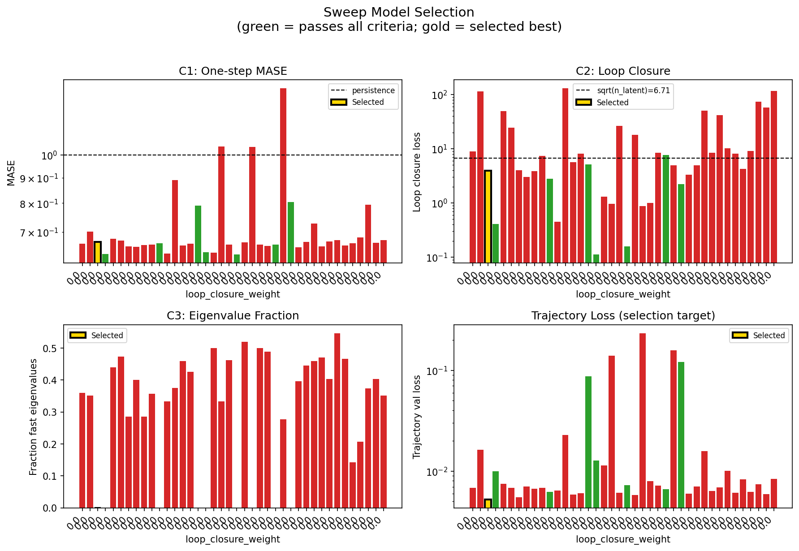
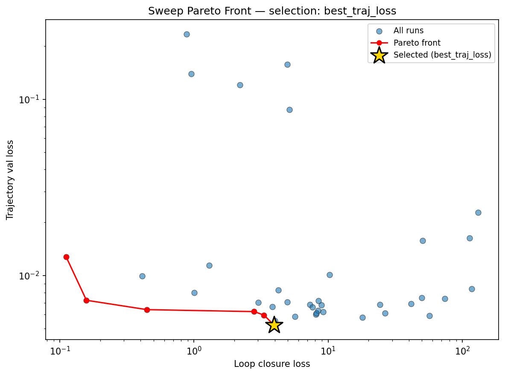
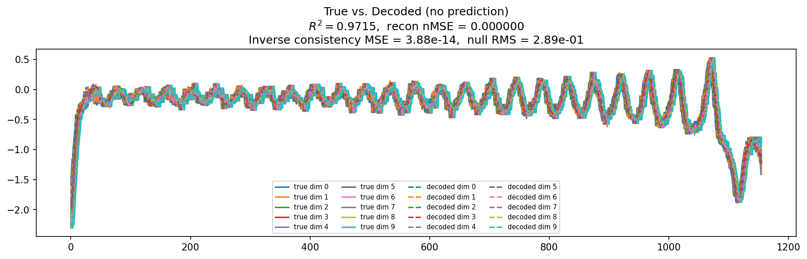
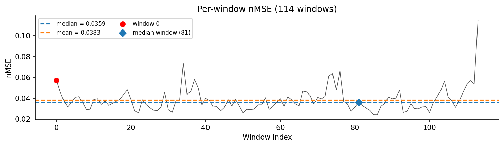
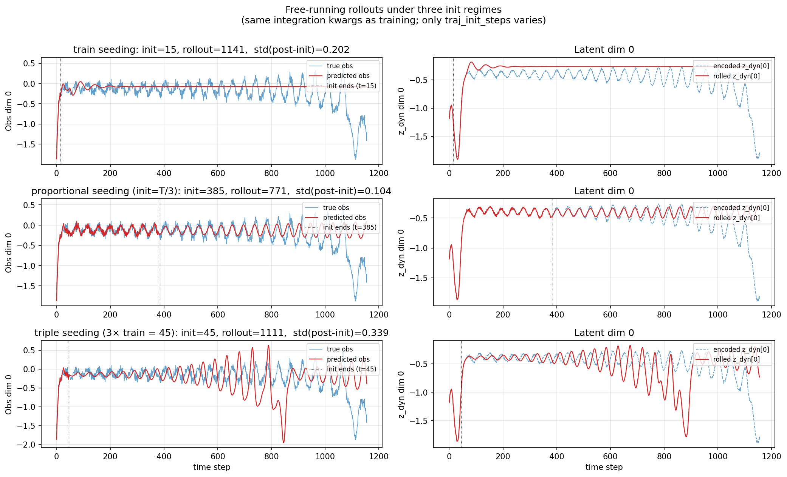
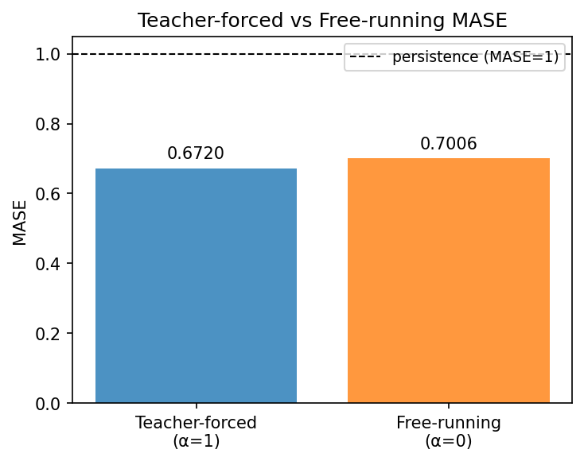
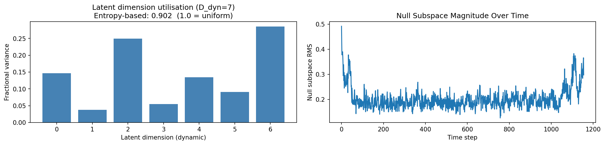
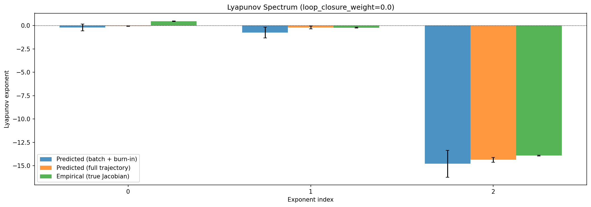
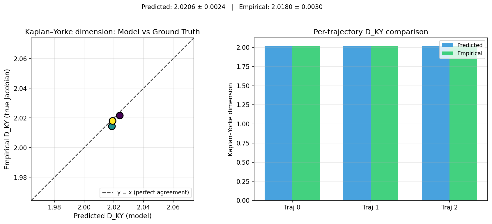
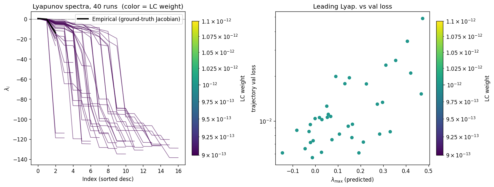
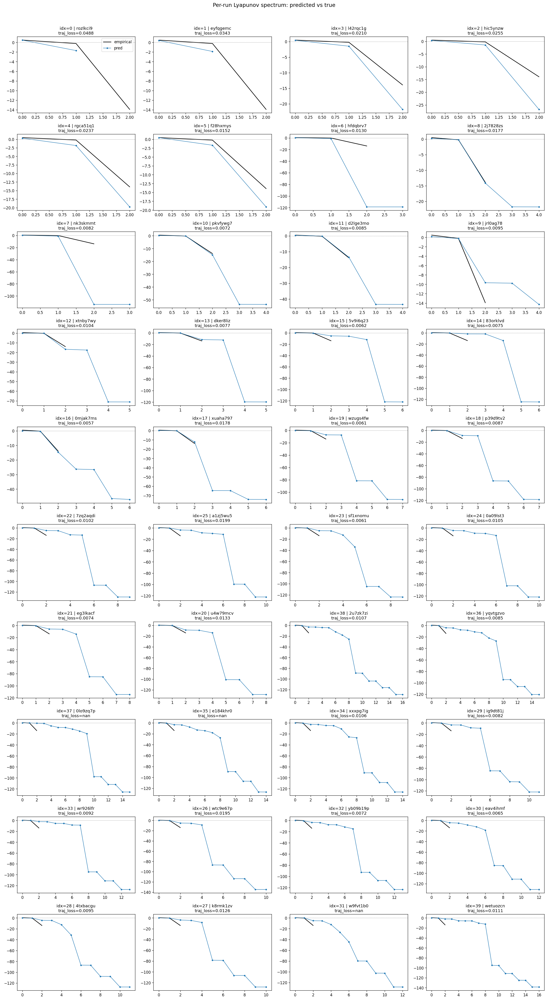
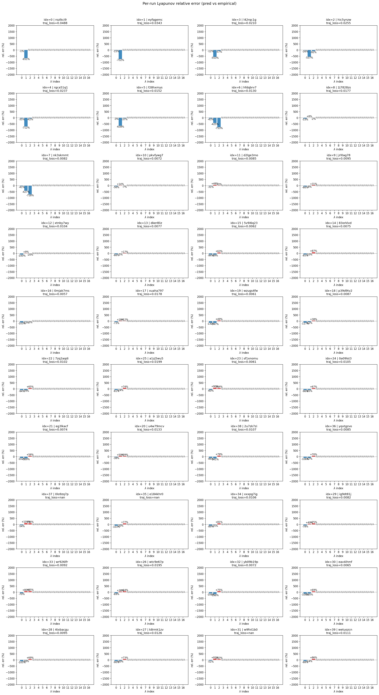
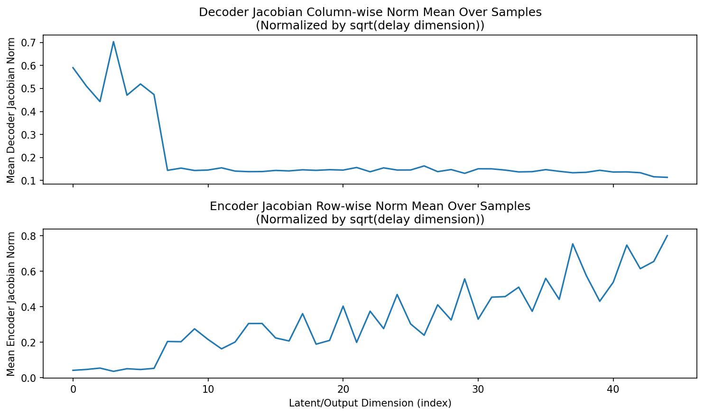
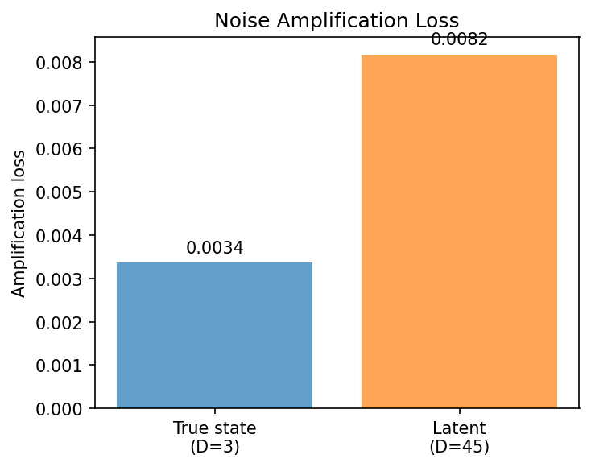
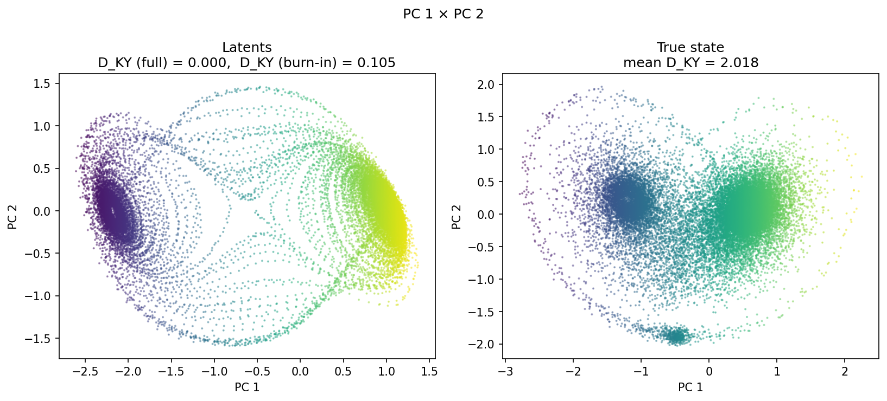
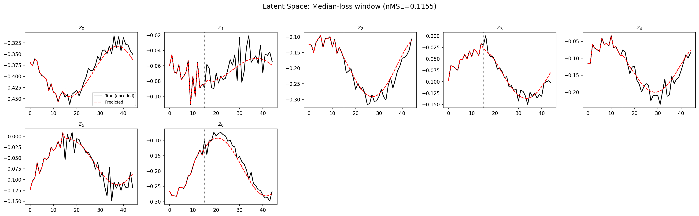
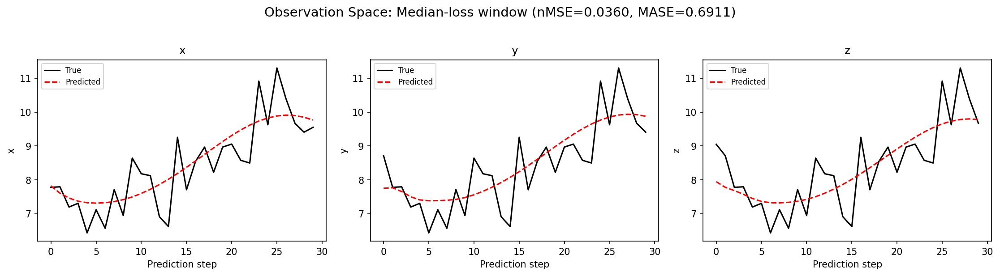
(to be written)
run_analytics stdoutrun_analyticsNo run_id provided — selecting best run from group 'lorenz_partial_additive_mse_uniform_p30_obsnoise005__ndelays_initsteps_autodim' ...
Found 40 total runs in JacobianODE/Lorenz_INDpartial_NDInitSweep_autodim_D1_NormTrue__JacobianODE (group=lorenz_partial_additive_mse_uniform_p30_obsnoise005__ndelays_initsteps_autodim)
All runs (state, loop_closure_weight, tangent_entropy_weight, kl_dyn_weight):
rozlkci9: state=finished, lc=0.0, te=0.0, kl_dyn=0.0
eyfqgemc: state=finished, lc=0.0, te=0.0, kl_dyn=0.0
l42rqc1g: state=finished, lc=0.0, te=0.0, kl_dyn=0.0
hic5ynzw: state=finished, lc=0.0, te=0.0, kl_dyn=0.0
rgca51q1: state=finished, lc=0.0, te=0.0, kl_dyn=0.0
f28hxmys: state=finished, lc=0.0, te=0.0, kl_dyn=0.0
hfdqbrv7: state=finished, lc=0.0, te=0.0, kl_dyn=0.0
2j7828zs: state=finished, lc=0.0, te=0.0, kl_dyn=0.0
nk3skmmt: state=finished, lc=0.0, te=0.0, kl_dyn=0.0
pkvfywg7: state=finished, lc=0.0, te=0.0, kl_dyn=0.0
d2lge3mo: state=finished, lc=0.0, te=0.0, kl_dyn=0.0
jrl0ag78: state=finished, lc=0.0, te=0.0, kl_dyn=0.0
xtnby7wy: state=finished, lc=0.0, te=0.0, kl_dyn=0.0
dker8liz: state=finished, lc=0.0, te=0.0, kl_dyn=0.0
5v9i6q23: state=finished, lc=0.0, te=0.0, kl_dyn=0.0
83orklvd: state=finished, lc=0.0, te=0.0, kl_dyn=0.0
0mjak7ms: state=finished, lc=0.0, te=0.0, kl_dyn=0.0
xuaha797: state=finished, lc=0.0, te=0.0, kl_dyn=0.0
wzugs4fw: state=finished, lc=0.0, te=0.0, kl_dyn=0.0
p39d9tv2: state=finished, lc=0.0, te=0.0, kl_dyn=0.0
7zq2aqdi: state=finished, lc=0.0, te=0.0, kl_dyn=0.0
a1zj5wu5: state=finished, lc=0.0, te=0.0, kl_dyn=0.0
sf1xnomu: state=finished, lc=0.0, te=0.0, kl_dyn=0.0
0a09lst3: state=finished, lc=0.0, te=0.0, kl_dyn=0.0
eg3lkacf: state=finished, lc=0.0, te=0.0, kl_dyn=0.0
u4w79mcv: state=finished, lc=0.0, te=0.0, kl_dyn=0.0
2u7zk7zi: state=finished, lc=0.0, te=0.0, kl_dyn=0.0
yqvtgzvo: state=finished, lc=0.0, te=0.0, kl_dyn=0.0
0lo9zq7p: state=finished, lc=0.0, te=0.0, kl_dyn=0.0
e184khr0: state=finished, lc=0.0, te=0.0, kl_dyn=0.0
xxxpg7ig: state=finished, lc=0.0, te=0.0, kl_dyn=0.0
ig9dt81j: state=finished, lc=0.0, te=0.0, kl_dyn=0.0
wr926lfr: state=finished, lc=0.0, te=0.0, kl_dyn=0.0
wtc9e67p: state=finished, lc=0.0, te=0.0, kl_dyn=0.0
yb09b19p: state=finished, lc=0.0, te=0.0, kl_dyn=0.0
eav4ihmf: state=finished, lc=0.0, te=0.0, kl_dyn=0.0
4txbacgu: state=finished, lc=0.0, te=0.0, kl_dyn=0.0
k8rmk1zv: state=finished, lc=0.0, te=0.0, kl_dyn=0.0
w9fvt1b0: state=finished, lc=0.0, te=0.0, kl_dyn=0.0
wetuozcn: state=finished, lc=0.0, te=0.0, kl_dyn=0.0
slurm_timeout_min not found in any run config — falling back to 180 min
Including rozlkci9 (lc=0.0): use_all_runs=True (state=finished)
Including eyfqgemc (lc=0.0): use_all_runs=True (state=finished)
Including l42rqc1g (lc=0.0): use_all_runs=True (state=finished)
Including hic5ynzw (lc=0.0): use_all_runs=True (state=finished)
Including rgca51q1 (lc=0.0): use_all_runs=True (state=finished)
Including f28hxmys (lc=0.0): use_all_runs=True (state=finished)
Including hfdqbrv7 (lc=0.0): use_all_runs=True (state=finished)
Including 2j7828zs (lc=0.0): use_all_runs=True (state=finished)
Including nk3skmmt (lc=0.0): use_all_runs=True (state=finished)
Including pkvfywg7 (lc=0.0): use_all_runs=True (state=finished)
Including d2lge3mo (lc=0.0): use_all_runs=True (state=finished)
Including jrl0ag78 (lc=0.0): use_all_runs=True (state=finished)
Including xtnby7wy (lc=0.0): use_all_runs=True (state=finished)
Including dker8liz (lc=0.0): use_all_runs=True (state=finished)
Including 5v9i6q23 (lc=0.0): use_all_runs=True (state=finished)
Including 83orklvd (lc=0.0): use_all_runs=True (state=finished)
Including 0mjak7ms (lc=0.0): use_all_runs=True (state=finished)
Including xuaha797 (lc=0.0): use_all_runs=True (state=finished)
Including wzugs4fw (lc=0.0): use_all_runs=True (state=finished)
Including p39d9tv2 (lc=0.0): use_all_runs=True (state=finished)
Including 7zq2aqdi (lc=0.0): use_all_runs=True (state=finished)
Including a1zj5wu5 (lc=0.0): use_all_runs=True (state=finished)
Including sf1xnomu (lc=0.0): use_all_runs=True (state=finished)
Including 0a09lst3 (lc=0.0): use_all_runs=True (state=finished)
Including eg3lkacf (lc=0.0): use_all_runs=True (state=finished)
Including u4w79mcv (lc=0.0): use_all_runs=True (state=finished)
Including 2u7zk7zi (lc=0.0): use_all_runs=True (state=finished)
Including yqvtgzvo (lc=0.0): use_all_runs=True (state=finished)
Including 0lo9zq7p (lc=0.0): use_all_runs=True (state=finished)
Including e184khr0 (lc=0.0): use_all_runs=True (state=finished)
Including xxxpg7ig (lc=0.0): use_all_runs=True (state=finished)
Including ig9dt81j (lc=0.0): use_all_runs=True (state=finished)
Including wr926lfr (lc=0.0): use_all_runs=True (state=finished)
Including wtc9e67p (lc=0.0): use_all_runs=True (state=finished)
Including yb09b19p (lc=0.0): use_all_runs=True (state=finished)
Including eav4ihmf (lc=0.0): use_all_runs=True (state=finished)
Including 4txbacgu (lc=0.0): use_all_runs=True (state=finished)
Including k8rmk1zv (lc=0.0): use_all_runs=True (state=finished)
Including w9fvt1b0 (lc=0.0): use_all_runs=True (state=finished)
Including wetuozcn (lc=0.0): use_all_runs=True (state=finished)
Found 40 effectively-done sweep runs:
loop_closure_weight=0.0, tangent_entropy_weight=0.0, kl_dyn_weight=0.0 -> run_id=0a09lst3
loop_closure_weight=0.0, tangent_entropy_weight=0.0, kl_dyn_weight=0.0 -> run_id=0lo9zq7p
loop_closure_weight=0.0, tangent_entropy_weight=0.0, kl_dyn_weight=0.0 -> run_id=0mjak7ms
loop_closure_weight=0.0, tangent_entropy_weight=0.0, kl_dyn_weight=0.0 -> run_id=2j7828zs
loop_closure_weight=0.0, tangent_entropy_weight=0.0, kl_dyn_weight=0.0 -> run_id=2u7zk7zi
loop_closure_weight=0.0, tangent_entropy_weight=0.0, kl_dyn_weight=0.0 -> run_id=4txbacgu
loop_closure_weight=0.0, tangent_entropy_weight=0.0, kl_dyn_weight=0.0 -> run_id=5v9i6q23
loop_closure_weight=0.0, tangent_entropy_weight=0.0, kl_dyn_weight=0.0 -> run_id=7zq2aqdi
loop_closure_weight=0.0, tangent_entropy_weight=0.0, kl_dyn_weight=0.0 -> run_id=83orklvd
loop_closure_weight=0.0, tangent_entropy_weight=0.0, kl_dyn_weight=0.0 -> run_id=a1zj5wu5
loop_closure_weight=0.0, tangent_entropy_weight=0.0, kl_dyn_weight=0.0 -> run_id=d2lge3mo
loop_closure_weight=0.0, tangent_entropy_weight=0.0, kl_dyn_weight=0.0 -> run_id=dker8liz
loop_closure_weight=0.0, tangent_entropy_weight=0.0, kl_dyn_weight=0.0 -> run_id=e184khr0
loop_closure_weight=0.0, tangent_entropy_weight=0.0, kl_dyn_weight=0.0 -> run_id=eav4ihmf
loop_closure_weight=0.0, tangent_entropy_weight=0.0, kl_dyn_weight=0.0 -> run_id=eg3lkacf
loop_closure_weight=0.0, tangent_entropy_weight=0.0, kl_dyn_weight=0.0 -> run_id=eyfqgemc
loop_closure_weight=0.0, tangent_entropy_weight=0.0, kl_dyn_weight=0.0 -> run_id=f28hxmys
loop_closure_weight=0.0, tangent_entropy_weight=0.0, kl_dyn_weight=0.0 -> run_id=hfdqbrv7
loop_closure_weight=0.0, tangent_entropy_weight=0.0, kl_dyn_weight=0.0 -> run_id=hic5ynzw
loop_closure_weight=0.0, tangent_entropy_weight=0.0, kl_dyn_weight=0.0 -> run_id=ig9dt81j
loop_closure_weight=0.0, tangent_entropy_weight=0.0, kl_dyn_weight=0.0 -> run_id=jrl0ag78
loop_closure_weight=0.0, tangent_entropy_weight=0.0, kl_dyn_weight=0.0 -> run_id=k8rmk1zv
loop_closure_weight=0.0, tangent_entropy_weight=0.0, kl_dyn_weight=0.0 -> run_id=l42rqc1g
loop_closure_weight=0.0, tangent_entropy_weight=0.0, kl_dyn_weight=0.0 -> run_id=nk3skmmt
loop_closure_weight=0.0, tangent_entropy_weight=0.0, kl_dyn_weight=0.0 -> run_id=p39d9tv2
loop_closure_weight=0.0, tangent_entropy_weight=0.0, kl_dyn_weight=0.0 -> run_id=pkvfywg7
loop_closure_weight=0.0, tangent_entropy_weight=0.0, kl_dyn_weight=0.0 -> run_id=rgca51q1
loop_closure_weight=0.0, tangent_entropy_weight=0.0, kl_dyn_weight=0.0 -> run_id=rozlkci9
loop_closure_weight=0.0, tangent_entropy_weight=0.0, kl_dyn_weight=0.0 -> run_id=sf1xnomu
loop_closure_weight=0.0, tangent_entropy_weight=0.0, kl_dyn_weight=0.0 -> run_id=u4w79mcv
loop_closure_weight=0.0, tangent_entropy_weight=0.0, kl_dyn_weight=0.0 -> run_id=w9fvt1b0
loop_closure_weight=0.0, tangent_entropy_weight=0.0, kl_dyn_weight=0.0 -> run_id=wetuozcn
loop_closure_weight=0.0, tangent_entropy_weight=0.0, kl_dyn_weight=0.0 -> run_id=wr926lfr
loop_closure_weight=0.0, tangent_entropy_weight=0.0, kl_dyn_weight=0.0 -> run_id=wtc9e67p
loop_closure_weight=0.0, tangent_entropy_weight=0.0, kl_dyn_weight=0.0 -> run_id=wzugs4fw
loop_closure_weight=0.0, tangent_entropy_weight=0.0, kl_dyn_weight=0.0 -> run_id=xtnby7wy
loop_closure_weight=0.0, tangent_entropy_weight=0.0, kl_dyn_weight=0.0 -> run_id=xuaha797
loop_closure_weight=0.0, tangent_entropy_weight=0.0, kl_dyn_weight=0.0 -> run_id=xxxpg7ig
loop_closure_weight=0.0, tangent_entropy_weight=0.0, kl_dyn_weight=0.0 -> run_id=yb09b19p
loop_closure_weight=0.0, tangent_entropy_weight=0.0, kl_dyn_weight=0.0 -> run_id=yqvtgzvo
n_dims=65, n_latent=65, n_dyn=11, dt=0.0150
run=0a09lst3: DiagnosticMetrics(one_step_mase=0.6632716059684753, loop_closure_loss=8.940694808959961, fast_eigenvalue_fraction=0.3590908944606781, trajectory_val_loss=0.006803846452385187) (from W&B history)
run=0lo9zq7p: DiagnosticMetrics(one_step_mase=0.701469361782074, loop_closure_loss=113.39947509765625, fast_eigenvalue_fraction=0.3515625, trajectory_val_loss=0.016283756121993065) (from W&B history)
run=0mjak7ms: DiagnosticMetrics(one_step_mase=0.6686431765556335, loop_closure_loss=3.9462268352508545, fast_eigenvalue_fraction=0.0, trajectory_val_loss=0.005233293399214745) (from W&B history)
run=2j7828zs: DiagnosticMetrics(one_step_mase=0.6311016082763672, loop_closure_loss=0.41077128052711487, fast_eigenvalue_fraction=0.0, trajectory_val_loss=0.009950894862413406) (from W&B history)
run=2u7zk7zi: DiagnosticMetrics(one_step_mase=0.6781697273254395, loop_closure_loss=49.83299255371094, fast_eigenvalue_fraction=0.4394117593765259, trajectory_val_loss=0.007462161593139172) (from W&B history)
run=4txbacgu: DiagnosticMetrics(one_step_mase=0.6721568703651428, loop_closure_loss=24.404052734375, fast_eigenvalue_fraction=0.4737499952316284, trajectory_val_loss=0.006834620609879494) (from W&B history)
run=5v9i6q23: DiagnosticMetrics(one_step_mase=0.6550254225730896, loop_closure_loss=4.001349925994873, fast_eigenvalue_fraction=0.2857142984867096, trajectory_val_loss=0.00552090210840106) (from W&B history)
run=7zq2aqdi: DiagnosticMetrics(one_step_mase=0.6530018448829651, loop_closure_loss=3.0140292644500732, fast_eigenvalue_fraction=0.4000000059604645, trajectory_val_loss=0.007025620434433222) (from W&B history)
run=83orklvd: DiagnosticMetrics(one_step_mase=0.6578584909439087, loop_closure_loss=3.8364126682281494, fast_eigenvalue_fraction=0.2857142984867096, trajectory_val_loss=0.006659208331257105) (from W&B history)
run=a1zj5wu5: DiagnosticMetrics(one_step_mase=0.6603388786315918, loop_closure_loss=7.3412275314331055, fast_eigenvalue_fraction=0.35681816935539246, trajectory_val_loss=0.00683616753667593) (from W&B history)
run=d2lge3mo: DiagnosticMetrics(one_step_mase=0.6636115312576294, loop_closure_loss=2.8115551471710205, fast_eigenvalue_fraction=0.0, trajectory_val_loss=0.006234963424503803) (from W&B history)
run=dker8liz: DiagnosticMetrics(one_step_mase=0.6329793930053711, loop_closure_loss=0.4466928541660309, fast_eigenvalue_fraction=0.3333333432674408, trajectory_val_loss=0.006396517623215914) (from W&B history)
run=e184khr0: DiagnosticMetrics(one_step_mase=0.8905954360961914, loop_closure_loss=131.02194213867188, fast_eigenvalue_fraction=0.37533333897590637, trajectory_val_loss=0.02283286117017269) (from W&B history)
run=eav4ihmf: DiagnosticMetrics(one_step_mase=0.6565994024276733, loop_closure_loss=5.649764537811279, fast_eigenvalue_fraction=0.45884615182876587, trajectory_val_loss=0.005848906468600035) (from W&B history)
run=eg3lkacf: DiagnosticMetrics(one_step_mase=0.6622716188430786, loop_closure_loss=8.09695053100586, fast_eigenvalue_fraction=0.426111102104187, trajectory_val_loss=0.006018174812197685) (from W&B history)
run=eyfqgemc: DiagnosticMetrics(one_step_mase=0.7904332280158997, loop_closure_loss=5.152933120727539, fast_eigenvalue_fraction=0.0, trajectory_val_loss=0.08754920959472656) (from cache, n_batches=100)
run=f28hxmys: DiagnosticMetrics(one_step_mase=0.637054979801178, loop_closure_loss=0.11162088066339493, fast_eigenvalue_fraction=0.0, trajectory_val_loss=0.012742096558213234) (from W&B history)
run=hfdqbrv7: DiagnosticMetrics(one_step_mase=0.6354407668113708, loop_closure_loss=1.2997634410858154, fast_eigenvalue_fraction=0.5, trajectory_val_loss=0.011395318433642387) (from W&B history)
run=hic5ynzw: DiagnosticMetrics(one_step_mase=1.0403393507003784, loop_closure_loss=0.9549960494041443, fast_eigenvalue_fraction=0.3333333432674408, trajectory_val_loss=0.1392793208360672) (from cache, n_batches=100)
run=ig9dt81j: DiagnosticMetrics(one_step_mase=0.6593676805496216, loop_closure_loss=26.471942901611328, fast_eigenvalue_fraction=0.4612500071525574, trajectory_val_loss=0.00611862912774086) (from W&B history)
run=jrl0ag78: DiagnosticMetrics(one_step_mase=0.6300713419914246, loop_closure_loss=0.15801428258419037, fast_eigenvalue_fraction=0.0, trajectory_val_loss=0.007230171002447605) (from W&B history)
run=k8rmk1zv: DiagnosticMetrics(one_step_mase=0.6671136021614075, loop_closure_loss=18.022789001464844, fast_eigenvalue_fraction=0.5199999809265137, trajectory_val_loss=0.005795257166028023) (from W&B history)
run=l42rqc1g: DiagnosticMetrics(one_step_mase=1.0393056869506836, loop_closure_loss=0.8822500705718994, fast_eigenvalue_fraction=0.0, trajectory_val_loss=0.2338985800743103) (from cache, n_batches=100)
run=nk3skmmt: DiagnosticMetrics(one_step_mase=0.6604945063591003, loop_closure_loss=1.005651831626892, fast_eigenvalue_fraction=0.5, trajectory_val_loss=0.007970093749463558) (from W&B history)
run=p39d9tv2: DiagnosticMetrics(one_step_mase=0.6554281115531921, loop_closure_loss=8.439270973205566, fast_eigenvalue_fraction=0.48875001072883606, trajectory_val_loss=0.007179839536547661) (from W&B history)
run=pkvfywg7: DiagnosticMetrics(one_step_mase=0.6597757935523987, loop_closure_loss=7.643290996551514, fast_eigenvalue_fraction=0.0, trajectory_val_loss=0.00659464905038476) (from W&B history)
run=rgca51q1: DiagnosticMetrics(one_step_mase=1.364698052406311, loop_closure_loss=4.962955474853516, fast_eigenvalue_fraction=0.2775000035762787, trajectory_val_loss=0.1578359156847) (from cache, n_batches=100)
run=rozlkci9: DiagnosticMetrics(one_step_mase=0.8035351037979126, loop_closure_loss=2.2053279876708984, fast_eigenvalue_fraction=0.0, trajectory_val_loss=0.12071456760168076) (from cache, n_batches=100)
run=sf1xnomu: DiagnosticMetrics(one_step_mase=0.6514770984649658, loop_closure_loss=3.3254430294036865, fast_eigenvalue_fraction=0.3955000042915344, trajectory_val_loss=0.005956427659839392) (from W&B history)
run=u4w79mcv: DiagnosticMetrics(one_step_mase=0.6675496101379395, loop_closure_loss=4.979036808013916, fast_eigenvalue_fraction=0.4444444477558136, trajectory_val_loss=0.00705954572185874) (from W&B history)
run=w9fvt1b0: DiagnosticMetrics(one_step_mase=0.7279269099235535, loop_closure_loss=50.45429229736328, fast_eigenvalue_fraction=0.4596153795719147, trajectory_val_loss=0.015756847336888313) (from W&B history)
run=wetuozcn: DiagnosticMetrics(one_step_mase=0.6544393301010132, loop_closure_loss=8.43765640258789, fast_eigenvalue_fraction=0.47058823704719543, trajectory_val_loss=0.00632119458168745) (from W&B history)
run=wr926lfr: DiagnosticMetrics(one_step_mase=0.669662356376648, loop_closure_loss=41.5259895324707, fast_eigenvalue_fraction=0.4032142758369446, trajectory_val_loss=0.006917516700923443) (from W&B history)
run=wtc9e67p: DiagnosticMetrics(one_step_mase=0.6741722822189331, loop_closure_loss=10.227995872497559, fast_eigenvalue_fraction=0.5454545617103577, trajectory_val_loss=0.01007596030831337) (from W&B history)
run=wzugs4fw: DiagnosticMetrics(one_step_mase=0.6574952006340027, loop_closure_loss=8.164962768554688, fast_eigenvalue_fraction=0.4662500023841858, trajectory_val_loss=0.0060982177965343) (from W&B history)
run=xtnby7wy: DiagnosticMetrics(one_step_mase=0.6645694971084595, loop_closure_loss=4.25631046295166, fast_eigenvalue_fraction=0.14166666567325592, trajectory_val_loss=0.008257216773927212) (from W&B history)
run=xuaha797: DiagnosticMetrics(one_step_mase=0.6823915839195251, loop_closure_loss=9.171093940734863, fast_eigenvalue_fraction=0.20642857253551483, trajectory_val_loss=0.006212009582668543) (from W&B history)
run=xxxpg7ig: DiagnosticMetrics(one_step_mase=0.7937853336334229, loop_closure_loss=74.19416809082031, fast_eigenvalue_fraction=0.3736666738986969, trajectory_val_loss=0.007398287765681744) (from W&B history)
run=yb09b19p: DiagnosticMetrics(one_step_mase=0.6659087538719177, loop_closure_loss=57.04132843017578, fast_eigenvalue_fraction=0.4032142758369446, trajectory_val_loss=0.0059127602726221085) (from W&B history)
run=yqvtgzvo: DiagnosticMetrics(one_step_mase=0.6741759777069092, loop_closure_loss=117.17025756835938, fast_eigenvalue_fraction=0.3515625, trajectory_val_loss=0.00838957168161869) (from W&B history)
Ranking method: best_traj_loss
Best run ID: 0mjak7ms
Best loop_closure_weight: 0.0
Best tangent_entropy_weight: 0.0
Best kl_dyn_weight: 0.0
Best traj loss: 0.005233
Criteria applied: ['C1', 'C2', 'C3']
Surviving: 8 / 40
Auto-selected run_id: 0mjak7ms
======================================================================
PARETO FRONTIER RUNS (6 runs)
======================================================================
Run ID LC Loss Traj Val Loss
------------ -------------- --------------
f28hxmys 0.111621 0.012742
jrl0ag78 0.158014 0.007230
dker8liz 0.446693 0.006397
d2lge3mo 2.811555 0.006235
sf1xnomu 3.325443 0.005956
0mjak7ms 3.946227 0.005233 <-- selected
======================================================================
RANKING METHOD COMPARISON (over 8 survivors)
======================================================================
Method Run ID LC Loss Traj Val Loss
---------------------- ------------ -------------- --------------
best_traj_loss 0mjak7ms 3.946227 0.005233 <-- active
pareto_knee jrl0ag78 0.158014 0.007230
geo_rank 0mjak7ms 3.946227 0.005233
minimax_rank jrl0ag78 0.158014 0.007230
geo_log_score 0mjak7ms 3.946227 0.005233
minimax_log_score jrl0ag78 0.158014 0.007230
======================================================================
Loading run 0mjak7ms from JacobianODE/Lorenz_INDpartial_NDInitSweep_autodim_D1_NormTrue__JacobianODE ...
Train dataset shape: torch.Size([24442, 45, 45])
Validation dataset shape: torch.Size([7777, 45, 45])
Test dataset shape: torch.Size([3333, 45, 45])
Train trajectories dataset shape: torch.Size([22, 1156, 45])
Validation trajectories dataset shape: torch.Size([7, 1156, 45])
Test trajectories dataset shape: torch.Size([3, 1156, 45])
Loading checkpoint epoch=152-step=30600.ckpt...
Computing reconstruction ...
Computing MASE ...
Teacher-forced MASE: 0.6720
Free-running MASE: 0.7006
Computing latent utilization ...
Entropy-based utilization: 0.902
Null subspace mean RMS: 2.065247e-01
Computing Lyapunov exponents ...
Computing full-trajectory Lyapunov (3 test trajs, T=1156) ...
Predicted Lyapunov exponents (batch+burn-in, 128 windowed trajs):
λ_1 = -0.2119 ± 0.3639
λ_2 = -0.7462 ± 0.5760
λ_3 = -14.7999 ± 1.4259
λ_4 = -26.9858 ± 2.9573
λ_5 = -27.3015 ± 2.8531
λ_6 = -52.2258 ± 12.9025
λ_7 = -52.6187 ± 12.3459
Predicted Lyapunov exponents (full-length, 3 test trajs):
λ_1 = -0.0621 ± 0.0093
λ_2 = -0.2071 ± 0.1600
λ_3 = -14.3679 ± 0.2524
λ_4 = -27.2393 ± 0.0750
λ_5 = -27.3655 ± 0.0596
λ_6 = -53.2434 ± 0.0825
λ_7 = -53.5610 ± 0.0993
Empirical Lyapunov exponents (mean ± std):
λ_1 = +0.4677 ± 0.0259
λ_2 = -0.2173 ± 0.0549
λ_3 = -13.9174 ± 0.0513
Mean KY dim (predicted): 0.000 ± 0.000
Mean KY dim (empirical): 2.018 ± 0.003
Mean KY dim (burn-in): 0.105 ± 0.363
Computing prediction windows ...
Windows: 114 — nMSE min=0.0238, median=0.0359, mean=0.0383, max=0.1147
Computing long-trajectory free-running rollouts ...
Computing encoder/decoder Jacobians ...
encoder_jacobian: (128, 45, 45)
decoder_jacobian: (128, 45, 45)
Computing amplification loss ...
Amplification loss — True state: 0.003366
Amplification loss — Latent: 0.008172